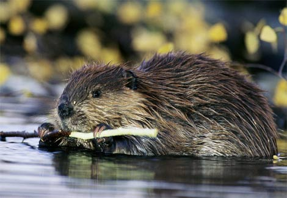
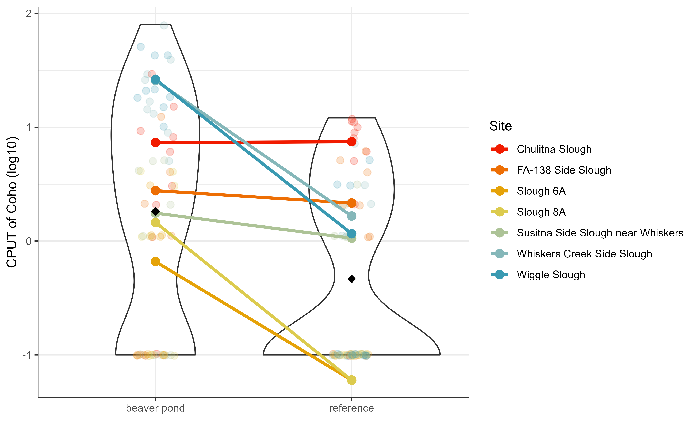
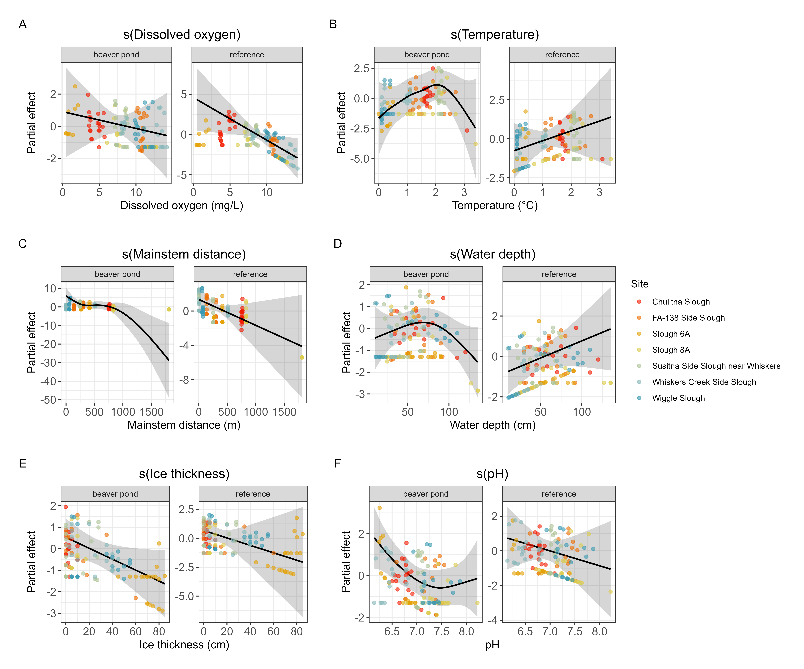

Coho-Beaver Analysis
Authors: Mallarie Yeager and Mason Smith
Purpose
In collaboration with folks at HCD (Luke Byker and Julianne Rosset), Mason Smith and Mallarie Yeager analyzed coho success within beaver bonds and downstream reference sites within 7 streams. In this “Short Report”, we illustrate our methods on analysis, written results with corresponding figures and a small discussion on specific future variables one might want to consider if expanding on this work. This report will be integrated into our manuscript which we plan to submit soon. Citations and links will be updated once available.
Objective: To understand how beaver pond presence influences coho overwintering success
Question 1: Does beaver pond presence enhance coho catch per unit trap (CPUT)?
Question 2: Are there environmental drivers which may explain beaver pond enhancement?

Methods
Analyses
To analyze whether beaver ponds enhance juvenile coho presence in this study, we used a one-way paired T-test to test whether catch per unit trap (CPUT) of coho was significantly higher at beaver ponds compared to reference locations within a site (i.e., river stem). The paired design of the paired one-way T-test allows us to address the non-independence within a site, while the one-way allows for a hypothesis driven test that beaver ponds result in more coho than their paired reference locations. Once testing whether beaver ponds enhance coho CPUT, we can examine whether specific environmental factors explain beaver pond enhancement through correlative models. We used generalized additive models (GAMs) to examine the relationship between coho beaver abundance and environmental conditions within beaver ponds or reference locations within a site. The site (i.e. river stem) of each dam was treated as a random effect due to the non-independence of treatment types (above vs below dams) within each river stem. This allowed for examining relationships between the coho beaver abundance and the fixed effects, while also taking into account the variation from random effects occurring at different levels within the population (West et al. 2022). Before fitting models, we examined covariates for collinearity using correlation coefficients (threshold < 0.7) and the variance inflation factor (VIF, threshold < 10) (Dormann et al. 2013). Models were fit with a Tweedie distribution and log-linked to the response variable using the gam function in the ‘mgcv’ package in R (Wood, 2011). We tested the full covariate model then removed poor fitting covariates until we received the best fit model. We looked for the highest percent deviance explained while minimizing the Akaike Information Criterion (AIC) value.
Results
Although there was variation in CPUT across paired sites (i.e. river stems), we overall found beaver ponds had on average significantly higher catch per unit trap (CPUT) of coho compared to their paired reference locations (one-way paired T-test: t(6) = 3.22, p-value = 0.009; Figure 1).

As beaver ponds do in fact enhance coho CPUT, we next looked at which environmental variables might explain the variation in CPUT across beaver pond vs reference and site. Through performing model selection via removing poor fitting covariates, we found our best fitting model via percent deviance explained and AIC selection (Table 1). Our best fitting model consisted of the following environmental factors: dissolved oxygen, temperature, water depth, distance from mainstream river stem, ice thickness and pH (Table 1).
Table 1. Summary of model selection information of the top 5 models identified. Akaike information criterion (AIC), percent deviance explained and Mean Absolute Error (MAE) were used to assess model performance. Bolded values represent the model with the best performance for a given metric. Treatment is a factor variable which designates whether the location was in a beaver pond or the downstream reference location. All models dependent variable was the catch per unit trap of Coho and the model family is a Tweedie distribution with a log link function.
| Model | Model Covariates | AIC | % Deviance Explained | MAE |
|---|---|---|---|---|
| Model 1 | Dissolved oxygen * treatment Temperature * treatment Water depth * treatment Mainstream distance * treatment Ice thickness * treatment Conductivity * treatment pH * treatment Site (random effect) |
531.6 | 80.2 | 2.33 |
| Model 2 | Dissolved oxygen * treatment Temperature * treatment Water depth * treatment Mainstream distance * treatment Ice thickness * treatment pH * treatment Site (random effect) |
529 | 80.4 | 2.30 |
| Model 3 | Dissolved oxygen * treatment Water depth * treatment Mainstream distance * treatment Ice thickness * treatment pH * treatment Site (random effect) |
534.5 | 77.8 | 2.52 |
| Model 4 | Dissolved oxygen * treatment Temperature * treatment Water depth * treatment Mainstream distance * treatment Ice thickness * treatment Site (random effect) |
534 | 78.3 | 2.54 |
| Model 5 | Dissolved oxygen * treatment Water depth * treatment Mainstream distance * treatment Ice thickness * treatment Site (random effect) |
537 | 76.3 | 2.67 |
Significant covariates on CPUT of coho in the best fit model included the dissolved oxygen in reference locations (p = 0.026), the mainstream distance of a beaver pond (p = 0.03), the ice thickness in a beaver pond (p = 0.045) and the pH in a beaver pond (p = 0.050; Table 2). Additionally, we found a marginal effect of water depth within beaver ponds on CPUT of coho (p = 0.076; Table 2).
Table 2. Summary statistics of the best fit model: Catch per unit trap of Coho ~ s(Dissolved oxygen, by = Treatment) + s(Temperature, by = Treatment) + s(Water depth, by = Treatment) + s(Mainstream distance, by = Treatment) + s(Ice thickness, by = Treatment) + s(pH, by = Treatment) + s(Site, bs = “re). edf = effective degrees of freedom, Ref.df = reference degrees of freedom. Model family is a Tweedie distribution with a log link function. Adjusted R-squared = 0.84, Deviance explained = 80.4, - REML = 267.47.
| Covariates | edf | Ref. df | F-Statistic | P-value |
|---|---|---|---|---|
| Dissolved oxygen:Beaver pond | 1 | 1 | 0.284 | 0.595 |
| Dissolved oxygen:Reference site | 1 | 1 | 4.622 | 0.026 |
| Temperature:Beaver pond | 2.98 | 3.74 | 0.868 | 0.376 |
| Temperature:Reference site | 1 | 1 | 0.793 | 0.378 |
| Water depth:Beaver pond | 2.49 | 3.074 | 2.276 | 0.076 |
| Water depth:Reference site | 1 | 1 | 1.824 | 0.160 |
| Mainstream distance:Beaver pond | 3.13 | 3.437 | 2.298 | 0.033 |
| Mainstream distance:Reference site | 1 | 1 | 1.998 | 0.147 |
| Ice thickness:Beaver pond | 1 | 1 | 4.275 | 0.045 |
| Ice thickness:Reference site | 1 | 1 | 0.371 | 0.353 |
| pH:Beaver pond | 2.23 | 2.62 | 2.021 | 0.050 |
| pH:Reference site | 1 | 11 | 1.001 | 0.428 |
| Site | 3.93 | 6 | 2.231 | 0.002 |
The partial effects plots showed dissolved oxygen at the reference sites had a significant negative relationship with coho CPUT (Figure 2a).The best fit model also showed clear patterns of coho CPUT based on water depth, mainstem distance, ice thickness and pH in beaver ponds (Table 2). Although not significant, temperature within beaver ponds displayed an unimodal shape with CPUT of coho, peaking near 2° C (Figure 2b). Similarly, water depth within beaver ponds had an unimodal shape, peaking near 0.75 m (Figure 2d). The mainstem distance effect appeared to have a threshold effect near 750m, after which there was a negative relationship between the distance and coho CPUT (Figure 2c). Ice thickness had a negative relationship on CPUT of coho in beaver ponds (Figure 2e). Lastly, pH within beaver ponds seems to have an inverse J-shape to the relationship (Figure 2f).These results suggest beaver pond enhancement of coho CPUT may be most effective in areas of low dissolved oxygen, beaver ponds which display moderate levels of depth and temperature, low ice thickness, low pH and nearer to the mainstream of the river.
As expected, there was also a significant random effect of site (p = 0.002), suggesting that some unmeasured variability contributed significantly to the coho CPUT across different study sites. This can be seen in most of the effects plots having clear clustering, with the exception of water depth and pH which appeared more evenly distributed (Figure 2d,f). The effect plots by treatment give more nuance to the concept of enhancement. For example, although there was no clear pattern for DO in beaver ponds, among the paired sites, enhancement appears to take place in the areas that had a high DO at the reference sites (e.g., Whiskers Creek Side Slough, Figure 2).

References
Dormann, C.F., Elith, J., Bacher, S., Buchmann, C., Carl, G., Carré, G., Marquéz, J.R.G., Gruber, B., Lafourcade, B., Leitão, P.J. and Münkemüller, T., 2013. Collinearity: a review of methods to deal with it and a simulation study evaluating their performance. Ecography, 36(1), pp.27-46.
West, B.T., Welch, K.B. and Galecki, A.T., 2022. Linear mixed models: a practical guide using statistical software. Chapman and Hall/CRC.
Wood, S. N. 2011. Fast stable restricted maximum likelihood and marginal likelihood estimation of semiparametric generalized linear models. In Journal of the Royal Statistical Society (B) (Vol. 73, Issue 1, pp. 3–36).